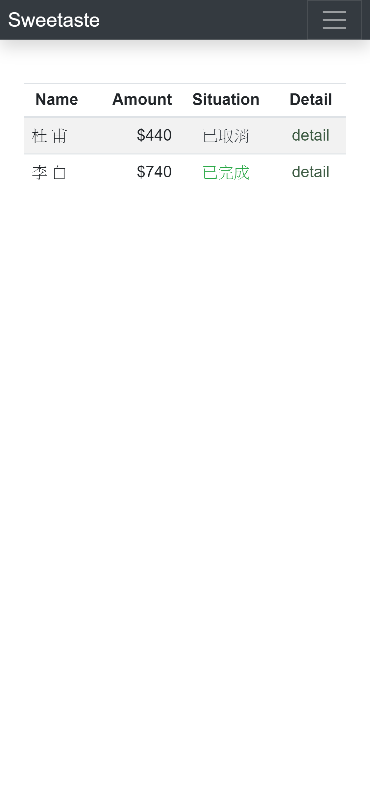
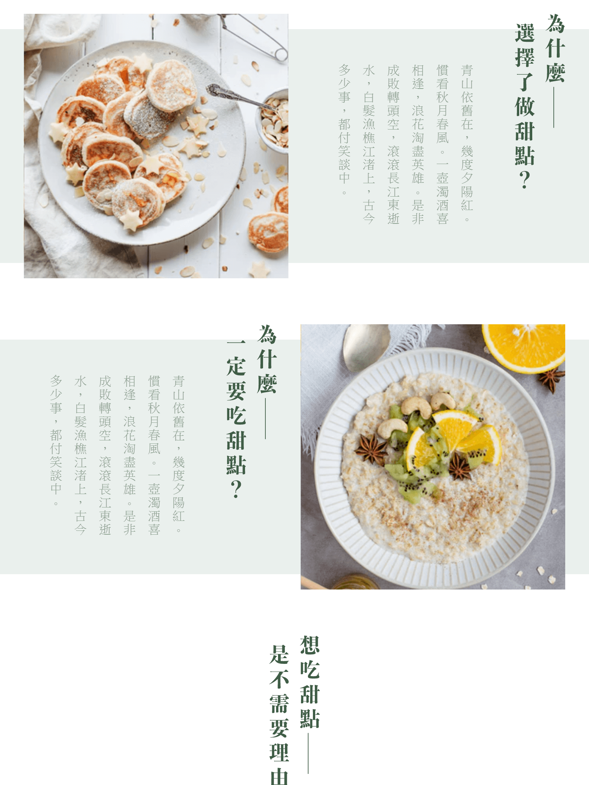
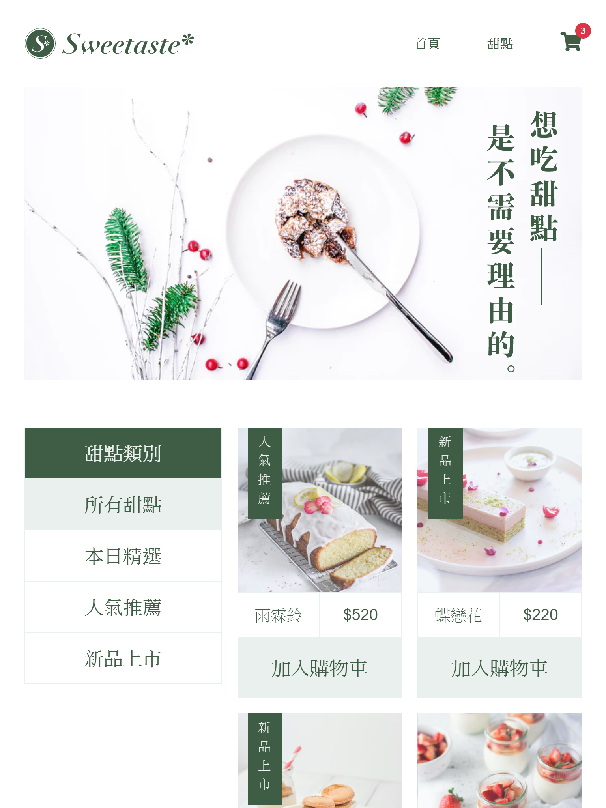
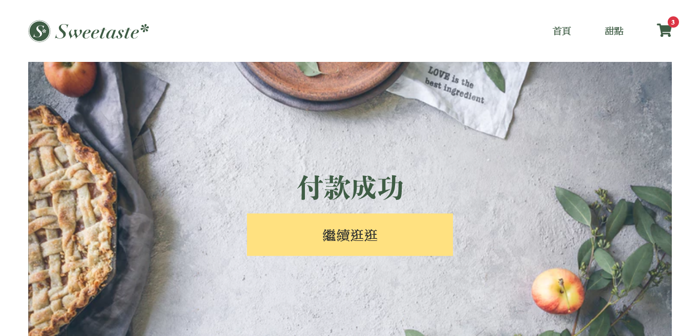
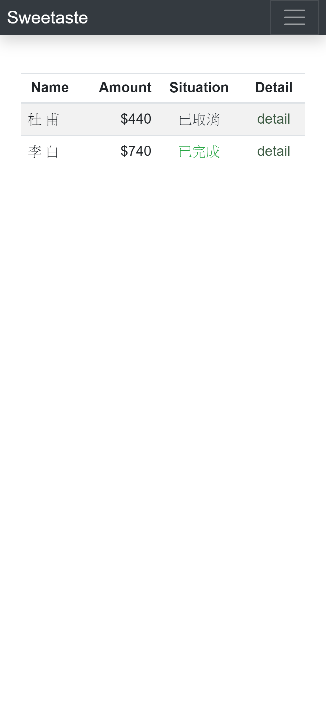
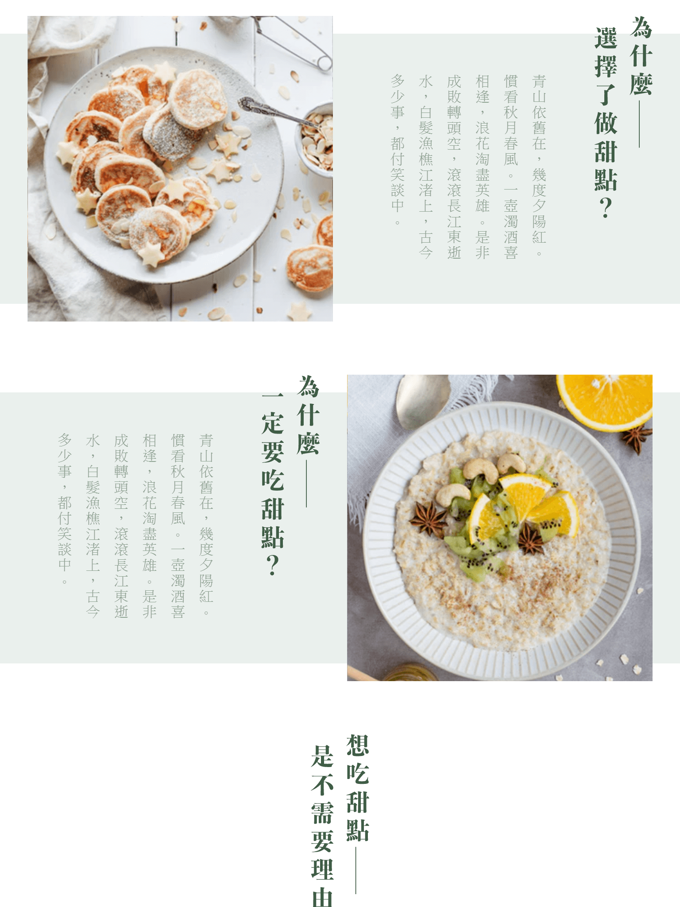
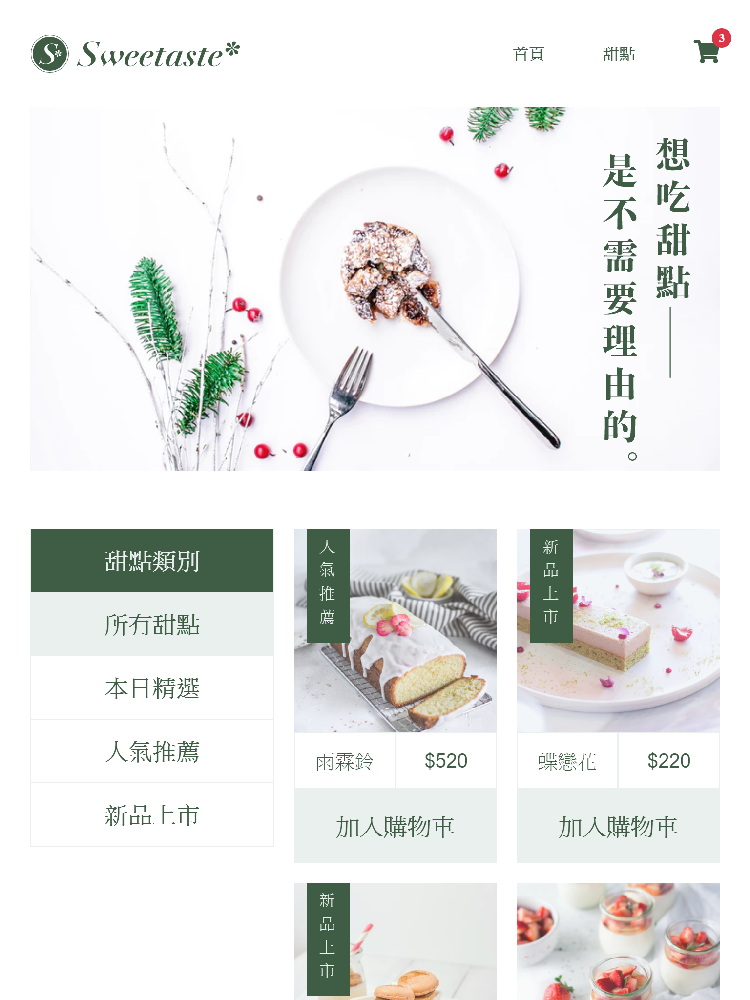
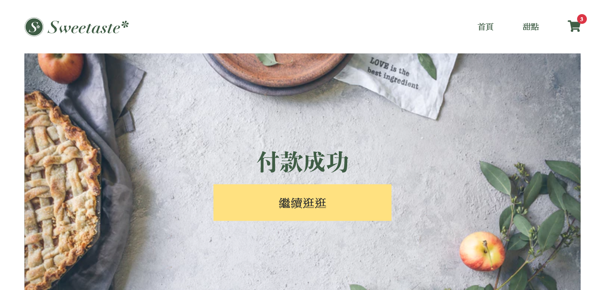

DAR-YEN
PORTFOLIO
Welcome To MY WORK
FrontEnd Development
Welcome To MY WORK
FrontEnd Development
數學專業畢業，擁有優秀的邏輯能力，
以成為一流的網頁前端工程師為目標。
在大學時期便大致修習完學校數學所的課程，參與數名系上教授的 seminar ，獲得教授認可，以助教的身分拿取台灣中央研究院與科技部的研究經費。展現數理邏輯天分與良好的自學能力。
擔任數學系必修課的助教，協助學生的學習。
大三時成為中央大學棒球隊副隊長，與教練、隊長一同帶領球隊突破分區賽。平時協助教練規劃訓練菜單，用自身經驗使球隊與自己一起成長。
碩一同時擔任了微積分、與數學系必修線性代數的助教。
在店內分配到了優化電商官網的任務，也是在這裡接觸到網頁前端並且喜愛上。
官網是架設在 Shopline 平台上，主要透過模組化的方式架設，但也能透過程式碼編寫，開始自己上網學習 html、css。
在任職的半年內，亦成功改善了官網的視覺與用戶體驗。
利用 Vue-cli 3.0 建構SPA電商店鋪，並使用 Scss 達成 mobile 優先的 RWD 網頁
使用 JQery 呈現一頁式 RWD 作品集
利用 Vue-cli ，搭配 Vue Axios 建構氣象預報網站
使用 Vue 完成拼圖小遊戲
嘗試使用原生 JS 與 CSS 刻劃出指針時鐘
使用 Vue 完成經典的貪吃蛇
jasoncehn10228@gmail.com
+886 975203607
+86 13310852747
 
